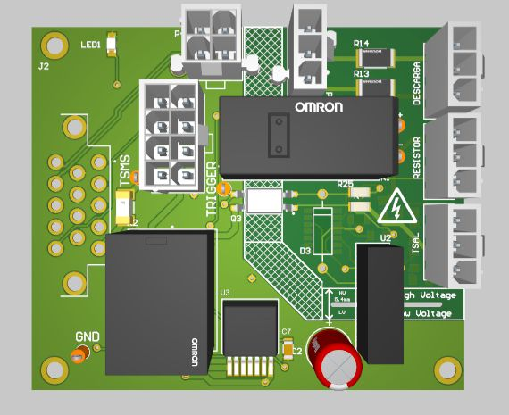

T09 · HV2 · EESC-USP Tupã
HV interface board
Vehicle interfaces for high-voltage signals and discharge circuitry.

Board details
- Interfaces
- HV, TSMP, TSAL and vehicle connectors
- Circuitry
- Discharge and relay interfaces
- Additional sheets
- TSLC and Conversor IRs
- Project shown
- T09 – HV2
HV board schematics
4 sheetsConnectorsView sheet

DischargeView sheet

TSLCView sheet

Conversor IRsView sheet

Altium project
These source links may require workspace access. The schematic drawings above are saved with this portfolio.